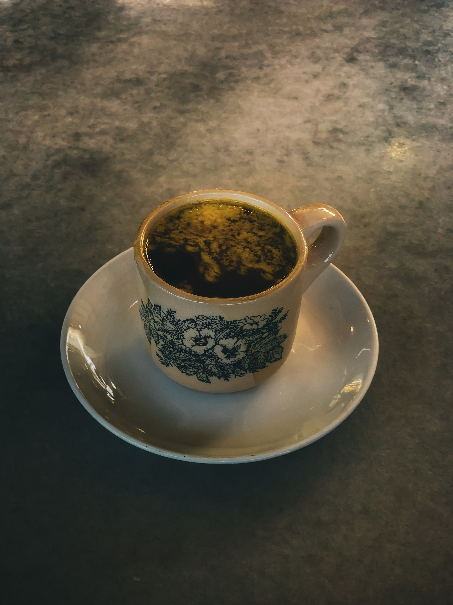

Kopi O

About the dish
Kopi O is black coffee with sugar and no milk. The O means "Black". You find it in kopitiam, the old-style coffee shops linked with Hainanese and other Chinese communities in Malaysia.
It's strong, dark and a little bitter, with some sweetness from the sugar. Kopitiam coffee is roasted in a traditional way, so it tastes bolder than the lighter coffee.
It comes in a small cup or glass, hot or iced. Say kopi o kosong for no sugar. A normal kopitiam breakfast is kopi o with toast or soft-boiled eggs.
Fun fact: Ordering in a kopitiam has its own words like kopi has milk, kopi o is only sugar and kosong means none.
Ingredients
- Strong ground coffee
- Hot water
- Sugar
- Ice (for iced kopi o)